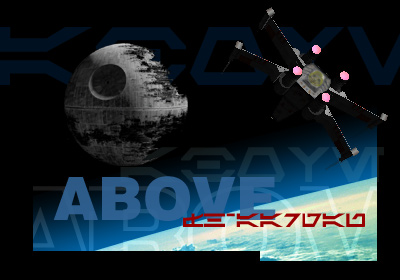

Das Programm ABOVE ist eine Agentenbasierte Simulation des aus den Star Wars-Filmen bekannten Kampf zwischen Raumschiffen der Rebellenallianz und des Galaktischen Imperiums. Und so ganz nebenbei dient es als Spielwiese für den Umgang mit einerseits der 3D-Programmierung, und andererseits für erste Erfahrung mit der KI-Entwicklung.
Geschrieben wurde ABOVE in Java unter Verwendung von Java3D.

Download
Projektstatus
15. Dezember 2013: ABOVE ist auf GitHub. Falls du interessiert bist kannst du gerne mit uns Kontakt aufnehmen.
7. Juli 2004: Das Semester ist vorbei, das Projekt abgeschlossen, und wir überlegen nun, ob wir ABOVE open-sourcen und/oder als Grundlage für die nächste Semesterarbeit verwenden wollen.
Projekt-Team
- Thomas Gerstendörfer
- Thomas Hellstern
- Lukas Kellenberger
- Michael Mühlebach